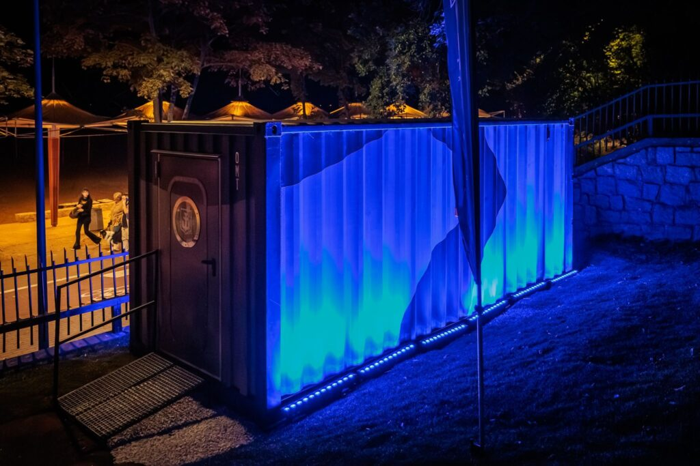
Sezmoo Creative Agency × Wargaming × Muzeum Marynarki Wojennej w Gdyni × World of Warships – Captain’s Club
Był to jeden z najbardziej złożonych projektów, jakie kiedykolwiek realizowaliśmy. Od pustego kontenera do w pełni wyposażonego pokoju gier – droga była długa i pełna wyzwań. Projekt pokoju gier został zaprojektowany przez Jarosława Chodoniuka i Agnieszkę Hincę, a Jarek zajął się całą konstrukcją.
Agencja kreatywna Sezmoo zajęła się całym projektem – od koordynacji budowy, produkcji materiałów wideo przed wydarzeniem i dokumentacji fotograficznej i wideo, po organizację i przeprowadzenie samego wydarzenia inauguracyjnego. Nadal pracujemy nad postprodukcją, ale już teraz możemy powiedzieć, że efekt końcowy jest dokładnie taki, jak sobie wyobrażaliśmy.
Wydarzenie inauguracyjne znalazło się w naszym kalendarzu zaledwie cztery tygodnie przed oficjalnym otwarciem. Było to ogromne wyzwanie, ale dzięki determinacji i pracy zespołowej wszystkich zaangażowanych osób udało nam się osiągnąć wyniki, z których jesteśmy naprawdę dumni.
Chciałbym podziękować całemu zespołowi, który włożył w ten projekt swoje serce i energię. Hubert Fudała i Radek Schenk byli odpowiedzialni za produkcję wideo, Wojtek Rojek za fotografię, a Kamila Kamińska zorganizowała i koordynowała wydarzenie – naprawdę dała z siebie wszystko, aby wszystko przebiegło bez zakłóceń. Mateusz Borkowski wspierał nas od strony technicznej, Justyna Szramek pomagała w organizacji, a Łukasz Sierputowski stworzył wszystkie grafiki potrzebne zarówno do wydarzenia, jak i do samego Gaming Roomu. Wszyscy dali z siebie 200%.
Szczególne podziękowania kierujemy do Klaudii Staskowskiej z Wargaming za zaufanie i doskonałą współpracę oraz do Grega K., który jako pierwszy zapoznał nas z tym projektem i sprawił, że wszystko stało się możliwe. Chciałbym również podziękować Krzysztofowi Mikulskiemu za jego cenny wkład, zaangażowanie i wsparcie podczas całego procesu.
Jesteśmy również wdzięczni Muzeum Marynarki Wojennej w Gdyni za pomoc w realizacji tego wydarzenia i wsparcie podczas przygotowań.
Wieczór otwarcia obfitował w niezapomniane atrakcje. Michał Milowicz wniósł niesamowitą energię i podzielił się miłymi słowami, a trio Jachimek–Tremiszewski wypełniło salę śmiechem dzięki swoim błyskotliwym improwizacjom.
Wiem, że w projekt zaangażowanych było wiele innych osób – jeśli kogoś pominąłem, proszę przyjąć moje przeprosiny i podziękowania za każdy wkład, który przyczynił się do sukcesu tego przedsięwzięcia.
Projekt ten dowodzi, że agencja Sezmoo Creative Agency zyskuje coraz większe uznanie i pokazuje, że potrafimy podjąć się naprawdę kompleksowych wyzwań – od pierwszego pomysłu po efekt końcowy.
Wiemy już, że wraz z Jarekiem budujemy nową gałąź Sezmoo. Więcej szczegółów wkrótce. 💪
Zdjęcia: Wojtek Rojek
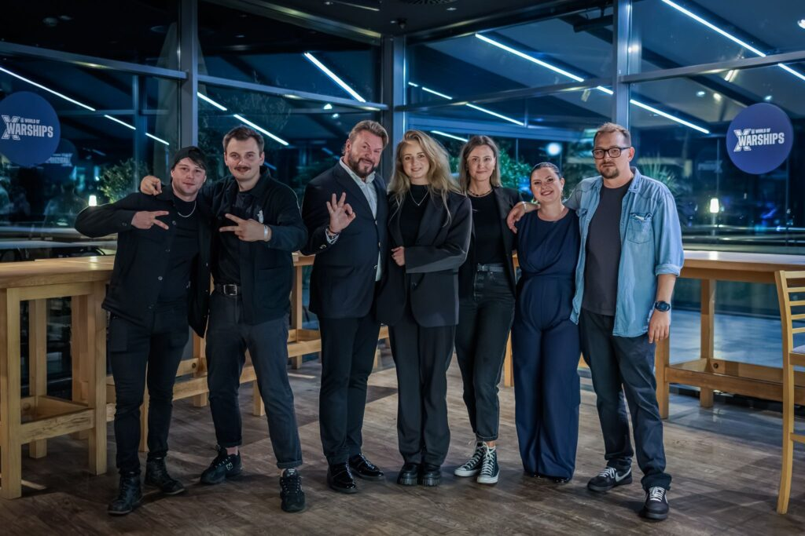

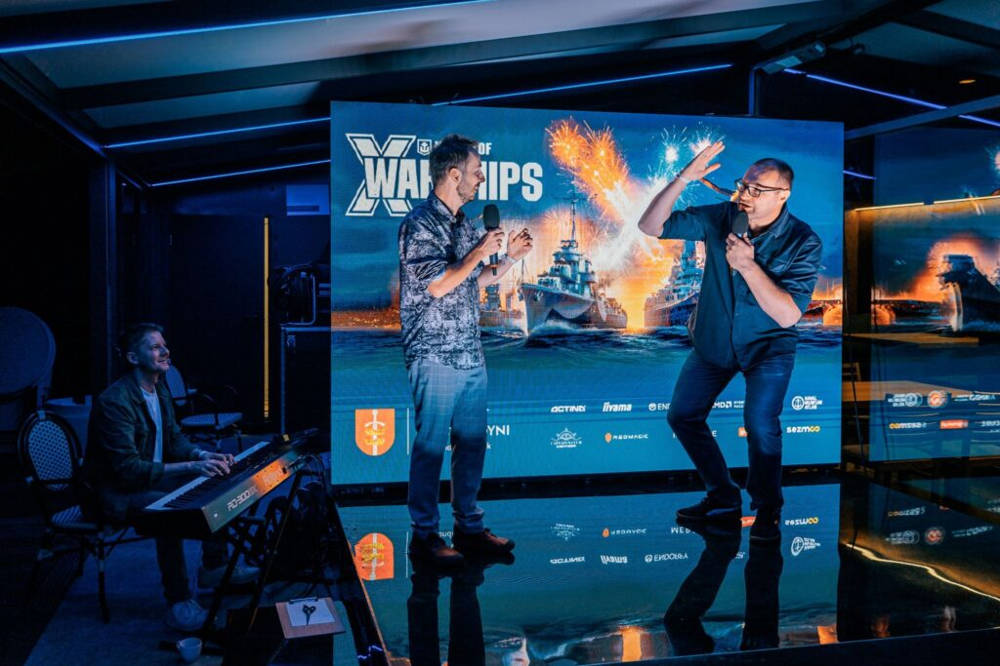
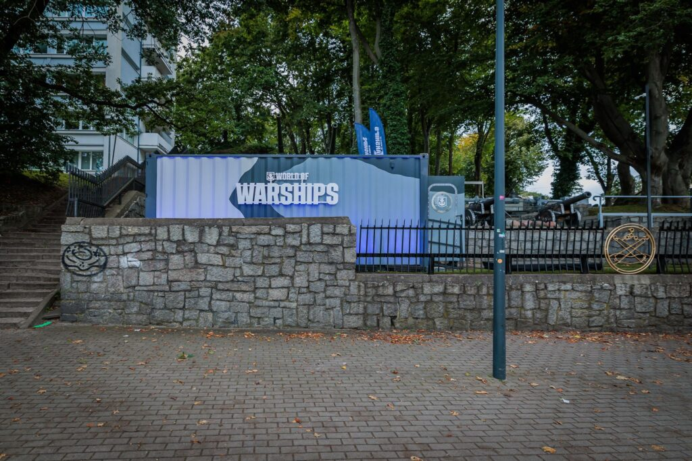
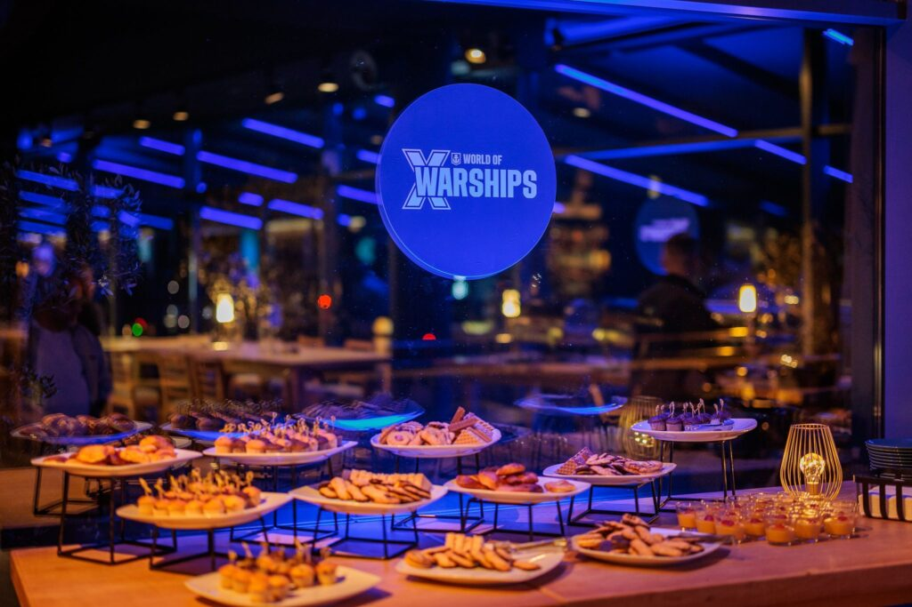
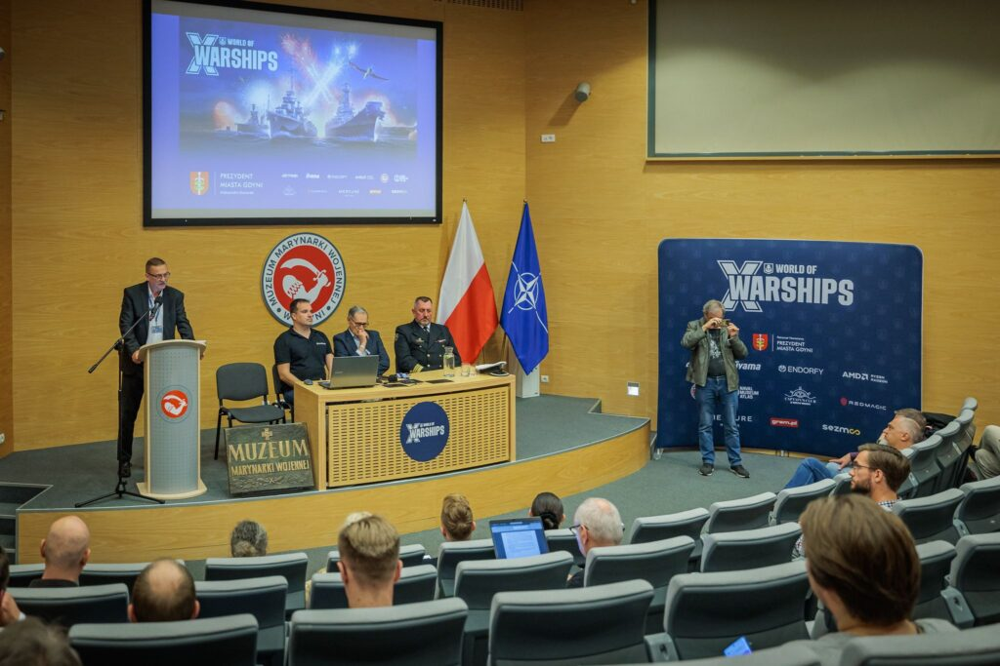
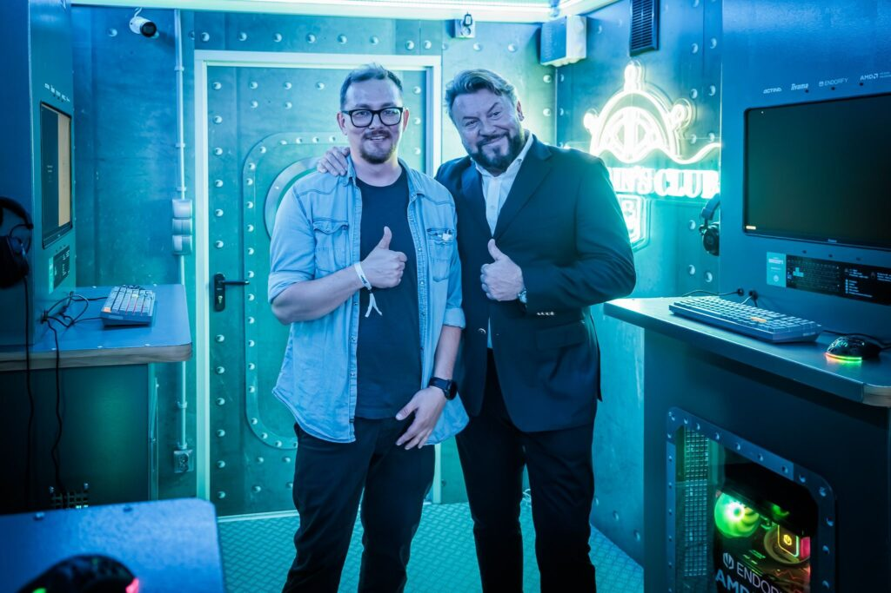
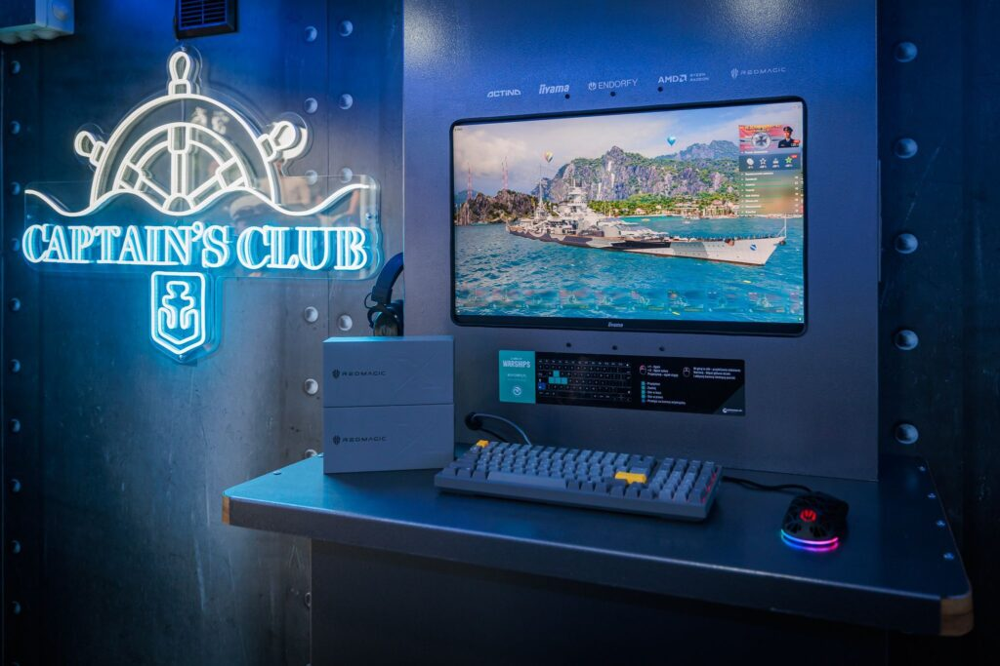
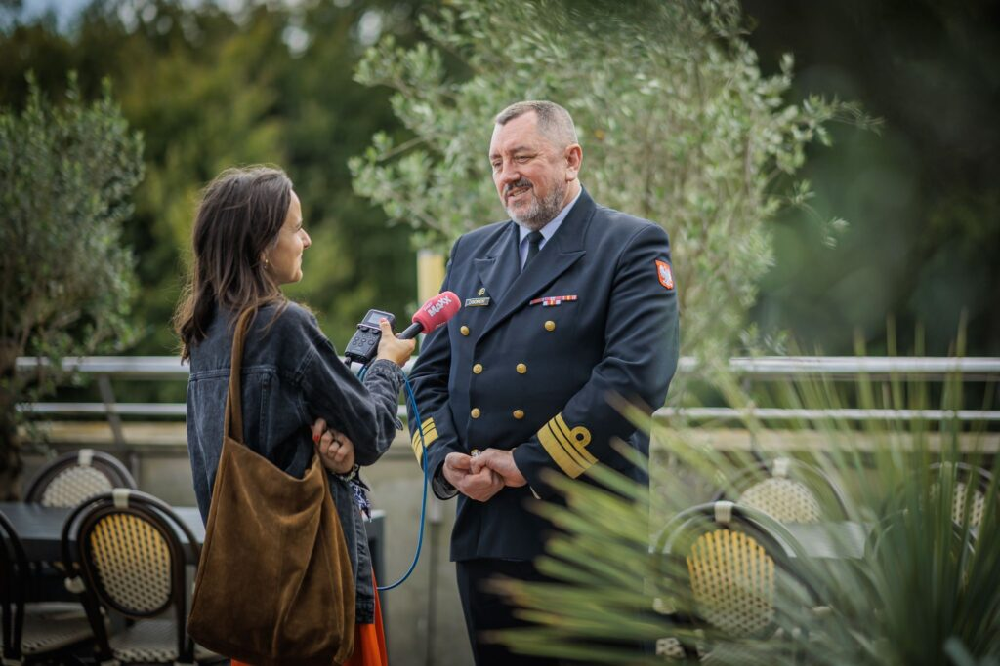
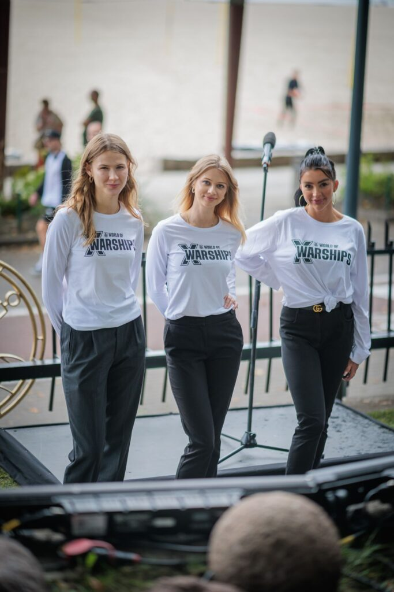
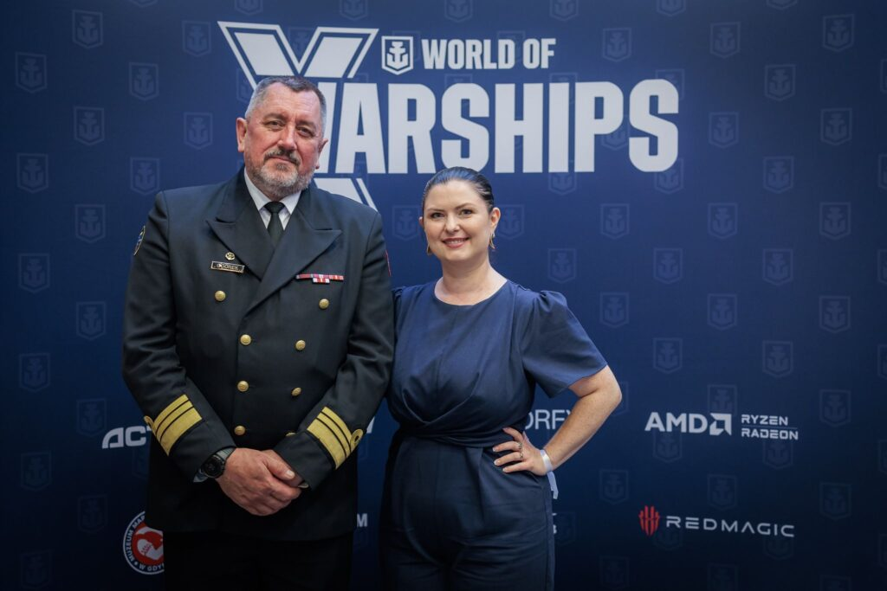
W mediach o projekcie
Poniżej kilka artykułów, które opisują 10-lecie World of Warships oraz otwarcie Strefy Gracza w Gdyni
- Benchmark: Takich gier tworzonych z pasją wiele już nie zostało – World of Warships świętuje 10-lecie istnienia Benchmark
- Trojmiasto: Otwarcie Strefy Gracza – World of Warships (informacja o wydarzeniu w Gdyni) trojmiasto.pl
- Trojmiasto: Do muzeum, żeby grać w grę? Strefa dla graczy w MMW w Gdyni trojmiasto.pl
- Gry-Online: 10-lecie World of Warships. Gdynia doczekała się wyjątkowej Strefy GRY-Online.pl
- CD-Action: 10 lat World of Warships: nowa Strefa Gracza w Muzeum Marynarki Wojennej w Gdyni (relacja) CD-Action
- Defence24: Muzeum MW ze stałą strefą dla graczy World of Warships Defence24
- Strona oficjalna World of Warships EU: Odwiedź Strefę Gracza World of Warships w Muzeum Marynarki Wojennej worldofwarships.eu